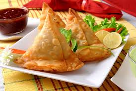

Description
Samosa, a crispy and spicy deep fried snack that has an crisp and flaky outer layer made of maida and rich filling of mashed potato, peas and spices is a popular street food of India
It’s a favorite snack among people of all ages and generally served with masala tea and tamarind chutney as afternoon snack. The main thing about this snack is it can be prepared with one’s liking of perfect not too hot, tangy and spicy taste
Ingredients
- 2 cup all purpose flour
- 1 teaspoon cumin seeds
- 1 teaspoon crushed ginger
- 1 teaspoon raisins
- 5 boiled potato
- 1 teaspoon coriander powder
- 1 teaspoon kasoori methi leaves
- 1 teaspoon carom seeds
Steps
- Sauté cumin seeds for potato filling
- Add spices and boiled potatoes and cook for a while
- Prepare the dough for the Samosa
- Roll the dough in small puris and cut into half
- Fill the semi-circle with potato filling and deep fry